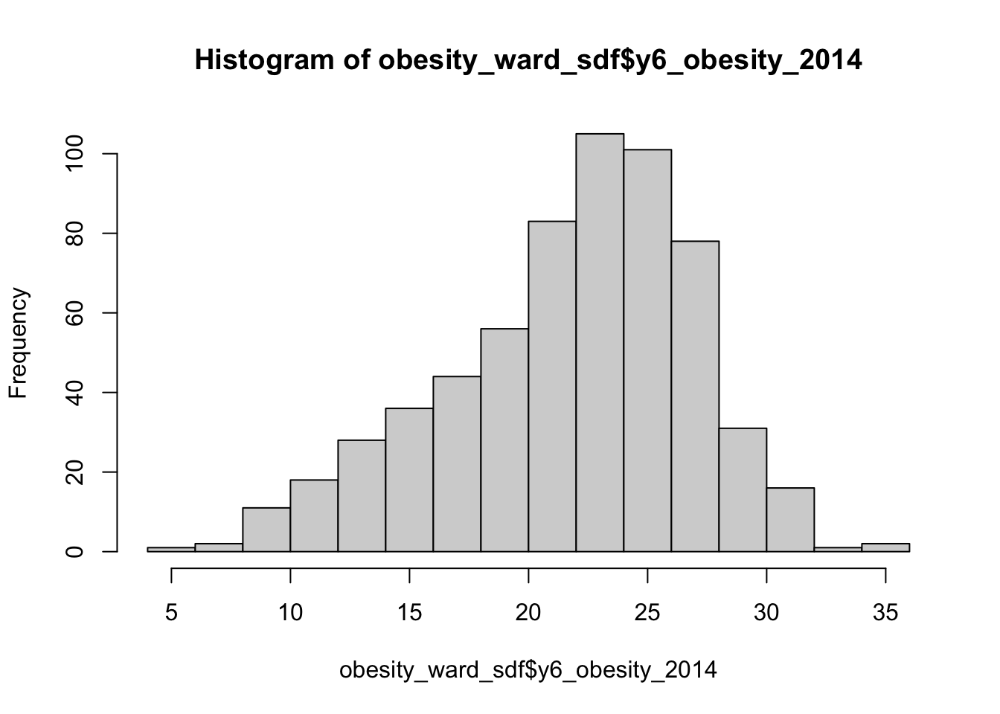
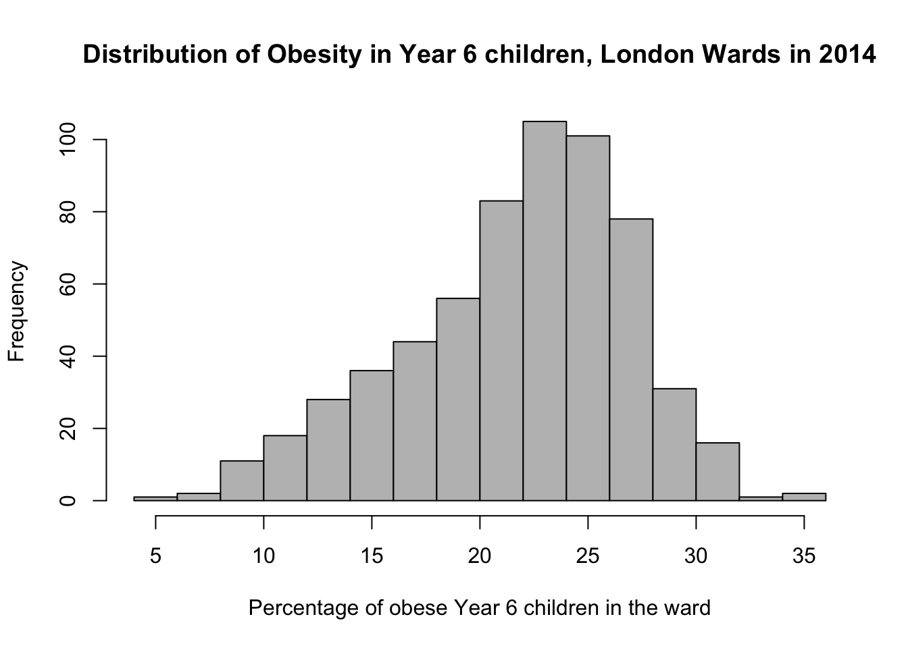

7 Analysing Spatial Patterns II: Spatial Autocorrelation
This week, we will be looking at measuring spatial dependence. Spatial dependence is the idea that the observed value of a variable in one location is dependent (to some degree) on the observed value of the same value in a nearby location. For spatial analysis, this dependence can be assessed and measured statistically by considering the level of spatial autocorrelation between values of a specific variable, observed in either different locations or between pairs of variables observed at the same location. Spatial autocorrelation occurs when these values are not independent of one another and instead cluster together across geographic space.
7.1 Lecture recording
- Lecture W7
7.2 Reading list
- Reading #1
- Reading #2
7.3 Childhood obesity
This week, we are using a completely new data set and investigating a different phenomena: childhood obesity. We will be investigating its distribution across London at the ward-level. To complete this analysis, we will be using a single data download from the London Datastore, which we will need to clean, wrangle and then join to one of our ward shapefiles in order to spatially investigate the distribution of childhood obesity.
7.3.1 Housekeeping
Let’s get ourselves ready to start our lecture and practical content by first downloading the relevant data and loading this within our script.
Open a new script within your GEOG0030 project and save this script as wk7-obesity-spatial-analysis.r. At the top of your script, add the following metadata (substitute accordingly):
# Analysing childhood obesity and its factors
# Date: January 2021
# Author: Justin This week we also need to install some additional libraries: spdep. spdep contains the relevant functions to run our various spatial autocorrelation tests. After installation, add the following libraries for loading in your script:
# libraries
library(tidyverse)
library(sf)
library(tmap)
library(janitor)
library(spdep)
library(RColorBrewer)7.3.2 Loading data
We are going to only need two data sets for this week - our London ward boundaries from 2011 and the Greater London Authority (GLA) Ward Atlas and Profiles. The GLA Ward Atlas and Profiles provide a range of demographic and related data for each ward in Greater London and were specifically designed to provide an overview of the ward’s population by collating and presenting a range of data on the population, diversity, households, life expectancy, housing, crime, benefits, land use, deprivation, and employment.
Indicators in the Atlas/Profile include:
- Age and sex
- Land area, projections and population density
- Household composition, religion, ethnicity
- Birth rates (general fertility rate), death rates (standardised mortality ratio), life expectancy
- Average house prices, properties sold, housing by council tax band, tenure, property size (bedrooms), dwelling build period and type, mortgage and landlord home repossession
- Employment and economic activity, Incapacity Benefit, Housing Benefit, Household income, Income Support and JobSeekers Allowance claimant rates, dependent children receiving child-tax credits by lone parents and out-of-work families, child poverty
- GCSE results, A-level / Level 3 results (average point scores), pupil absence,
- Child obesity
- Crime rates (by type of crime), fires, ambulance call outs, road casualties
- Happiness and well-being, land use, public transport accessibility (PTALs), access to public greenspace, access to nature, air emissions / quality, car use, bicycle travel
- Indices of Deprivation
- Election turnout
The main data set utilises the 2011 Ward Boundaries as its spatial representation, therefore we need to use the 2011 boundaries. We already have our 2011 London Ward boundaries within our raw data folder, so we only need to download our Ward Atlas.
- Navigate to the ward Atlas data set in the London Data Store: [Link].
- Download the
ward-atlas-data.csv. You might find that instead of downloading the file, your browser will open up a new window. You have two options:- Copy and paste all contents of the page into a text editor such as Notepad and save your pasted contents as
ward-atlas-data.csvin your raw data folder in a newatlasfolder - make sure to add the.csvto the end of your file name to save your text file as acsv. - Click back to the data set page, right-click on the
ward-atlas-data.csvname and select Download Linked File from your computer’s options. Move this into yourrawdata folder in a newatlasfolder.
- Copy and paste all contents of the page into a text editor such as Notepad and save your pasted contents as

Figure 7.1: Download linked file.
Let’s first load our London ward shapefile from our raw/boundaries/2011 folder:
# read in our London ward boundaries
london_ward_shp <- read_sf("data/raw/boundaries/2011/London_Ward_CityMerged.shp")We can both View() and plot() the data in our console to check what our data looks like. We are happy with the dataframe (its field names) and what its looking like as a shapefile, so we do not need to do any cleaning on this data set. We can now turn to our London Ward Atlas data set and load the csv data set into R:
# read in our ward atlas data csv from our raw data folder
all_ward_data <- read_csv("data/raw/atlas/ward-atlas-data.csv")If you go ahead and view the data, you will see we have a lot of information about our Wards in the data set - we have a total of 946 variables four our 629 wards. We cannot exactly analyse all of these variables, so we will need to extract only the variables we need.
Note
If you run into an error along the lines of Error in nchar(x, "width") : invalid multibyte string, element 1, there is an issue with the character encoding of the file. If this is the case, please download a UTF-8 encoded copy of the file here: [Link]
7.3.3 Data preparation
To clean our data and extract the variables for our analysis, we need to identify those most useful to our research. Of course, we need to find a variable that matches our phenomena of investigation: child obesity. We will also keep several additional variables in case one would want to move beyond studying the distribution of child obesity, e.g. by looking at explanatory factors such as:
- Individual level factors: diet and exercise, parents’ weights, mode of travel to school / time taken to walk to school.
- Household/societal level factors: area deprivation, household income, household employment
This week, our data wrangling is quite minimal - but it is important you follow all the steps to ensure you have the correct final dataframe for our analysis. Overall, you will:
- Select the required columns for our dataframe and analysis.
- Remove the first row which contains data that are part of the column names.
- Remove the last three rows, which contains data for the whole of London, England, and England and Wales.
- Clean and rename our field columns.
- Coerce our variables into the correct data type for our analysis.
- Join our ‘atlas data’ dataframe to our ward spatial dataframe.
The fields that we need to extract from our data set include:
- 838: Childhood Obesity Prevalence; Year 6 (School children aged 10-11); 2011/12 to 2013/14: % obese
- 900: Indices of Deprivation; IDACI; 2010
- 248: House Prices; Median House Price; 2014
- 353: Household Income; Mean Modelled Household income (£); 2012/13
- 373: Employment; Adults not in Employment - 2011 Census; % of households with no adults in employment with dependent children
- 377: Qualifications; Qualifications and Students - 2011 Census; % No qualifications
- 859: Access to green space and nature; % homes with deficiency in access to nature; 2012
- 865: Public Transport Accessibility; Average PTAL score; 2014
and of course:
- 2: …2 - which contains our ward codes.
- 4: …4 - which contains our ward names.
Select our 10 fields from our all_ward_data dataframe for use in analysis:
# select our 10 fields for analysis using their index number
obesity_ward_data <- select(all_ward_data, 2, 4, 838, 900, 248, 353, 373, 377, 859,
865)You should now have a new dataframe with our 10 variables. One issue with our original csv is that is contained two rows worth of field names - hence if you look at the first row of our dataframe, it does not make sense. We therefore want to remove this row as well as the last three rows. In addition, it would be good to clean up our names for use - here we’re going to use the janitor library, which cleans our names by removing white space, special characters, capitals etc.
Remove the first line of our dataframe and clean our field names:
# remove our first row, remove last three rows, clean the names of our fields
obesity_ward_data <- obesity_ward_data %>%
slice(-1) %>%
head(-3) %>%
clean_names()
# inspect
names(obesity_ward_data)## [1] "x2"
## [2] "x4"
## [3] "childhood_obesity_prevalence_year_6_age_10_11_2011_12_to_2013_14_percent_obese"
## [4] "indices_of_deprivation_idaci_2010"
## [5] "house_prices_median_house_price_2014"
## [6] "household_income_mean_modelled_household_income_2012_13"
## [7] "employment_adults_not_in_employment_2011_census_percent_of_households_with_no_adults_in_employment_with_dependent_children"
## [8] "qualifications_qualifications_and_students_2011_census_percent_no_qualifications"
## [9] "access_to_green_space_and_nature_percent_homes_with_deficiency_in_access_to_nature_2012"
## [10] "public_transport_accessibility_average_ptal_score_2014"The final thing we can do with this data set before we need to join it to our London Wards spatial dataframe is just tidy up our column names - x2 and x4 does not exactly mean much to us and it gives us a chance to shorten the names of the other variables; we could leave them as is now they have been cleaned, but it will be easier for reference later if they’re shorter.
# rename field names of ward data to something more useful
names(obesity_ward_data) <- c("ward_code", "ward_name", "y6_obesity_2014", "IDACI_2010",
"med_house_price_2014", "mean_hh_income_2013", "per_no_adult_employ_2011", "per_no_qual_2011",
"per_deficiency_greenspace_2012", "PTAL_2014")Now we have the data we want to map, we need to do a final spot of checking - one of the main issues faced with loading data directly from a csv in R without cleaning it first in a spreadsheet programme as we have done before, is that we cannot guarantee that the data will be loaded correctly. Unfortunately with our current dataframe we can see that not all columns are correctly loaded - if you inspect the structure of the dataframe, you will see that several of our variables are of the type char.
# inspect the structure of the data
str(obesity_ward_data)## tibble [625 × 10] (S3: tbl_df/tbl/data.frame)
## $ ward_code : chr [1:625] "E09000001" "E05000026" "E05000027" "E05000028" ...
## $ ward_name : chr [1:625] "City of London" "Abbey" "Alibon" "Becontree" ...
## $ y6_obesity_2014 : chr [1:625] "23.21428571" "24.71655329" "25.99531616" "29.25851703" ...
## $ IDACI_2010 : num [1:625] 0.12 0.439 0.397 0.38 0.435 ...
## $ med_house_price_2014 : num [1:625] 765000 173000 215000 210000 240500 ...
## $ mean_hh_income_2013 : chr [1:625] "99390" "38870" "37290" "37860" ...
## $ per_no_adult_employ_2011 : chr [1:625] "0.86659065" "8.748906387" "12.44019139" "10.73182137" ...
## $ per_no_qual_2011 : chr [1:625] "6.7" "16.4" "31.2" "28" ...
## $ per_deficiency_greenspace_2012: chr [1:625] "100" "2.164412071" "71.7273622" "17.1662713" ...
## $ PTAL_2014 : chr [1:625] "7.9" "5.989364918" "3.145890095" "2.8717665" ...The results from the str() function suggest that some variables have been interpreted by R to be characters rather than numeric. This might be because there is some missing data or in some cases, the decimal point can interfere with the data being read as a numeric. Luckily it is easy to change our data type - a bit like right-clicking on our columns in Excel and setting the format of the column to number, we’ll do this using code. If we wanted to apply this to a single column than we would use the code: as.numeric(dataframe$column) but as we want to apply this across a few columns, we’ll be using the mutate_at() function from the dplyr library.
# change data types
obesity_ward_data <- mutate_at(obesity_ward_data, vars(y6_obesity_2014, mean_hh_income_2013,
per_no_adult_employ_2011, per_no_qual_2011, per_deficiency_greenspace_2012, PTAL_2014),
function(x) as.numeric(x))## Warning in (function (x) : NAs introduced by coercionYou will see warnings that NAs have been introduced by this coercion in some of our variables - this is something we will need to be aware of later in our analysis, but will not look at right now. Now our final step is to join our final obesity_ward_data dataframe to our london_wards_shp spatial dataframe so we can complete both statistical and spatial analysis:
# join obesity df to ward sdf for analysis
obesity_ward_sdf <- left_join(london_ward_shp, obesity_ward_data,
by = c("GSS_CODE"="ward_code"))Have a look at your newly created spatial dataframe - for a quick look at the data, you can run the plot() command in your console. If you like, you can also write out the final csv using the write_csv() function to save a raw copy in your data folder.
7.4 Spatial distributions
Today, we are interested in looking at spatial Autocorrelation: the effect of spatial processes on distributions. We will be using our newly created obesity_ward_sdf to look at this in action, whilst also answering questions on the overall distribution and factors of childhood obesity.
Within general data analysis, when it comes to analysing the distribution of your data, you are looking to conduct what is known as Exploratory Data Analysis (EDA) which is where we look to summarise the main characteristics of our data. EDA was promoted by prominent statistician John Tukey to encourage data analysts to explore their data outside of traditional formal modelling - and come up with new areas of investigation and hypotheses. Tukey promoted the use of five summary statistics: the max-min, the median, and the quartiles, which, in comparison to the mean and standard deviation, provide a more robust understanding of a data’s distribution, particularly if the data is skewed.
We looked at how we can use R to extract some of these summary statistics briefly in Week 4, but let’s have a look at how we can add further to this EDA, including creating some statistical charts of our data’s distribution.
In your script, below your joining of our dataframes, summarise our y6_obesity_2014 distribution
# summarise our y6_obesity_2014 data
summary(obesity_ward_sdf$y6_obesity_2014)## Min. 1st Qu. Median Mean 3rd Qu. Max. NA's
## 5.929 18.569 22.670 21.752 25.325 35.000 12This summary() function can also be called on the data set as a whole and will generate summary statistics for each individual numeric variable. You can execute this in your console if you like to get an understanding of all of variables - although we will focus on obesity for much of this practical. We can see that our Median and Mean are quite close to one another - and the quartiles are nearly the same amount apart from the mean, so we can start to think that our data is normally distribution. To confirm this, we can do the next best thing, which is plot our distribution using a histogram, using the base R hist() command:
# plot the histogram of our y6_obesity_2014 data
hist(obesity_ward_sdf$y6_obesity_2014)
We can actually see our data has a slight negative skew - which would make sense given that our median is higher than our mean.

Figure 7.2: Cheatsheet on data distributions: negative skew, normal, positive skew.
We can further customise our histograms if we want to make them more aesthetically pleasing and update the title and axis labeling:0
# pretty histogram
hist(obesity_ward_sdf$y6_obesity_2014, breaks = 20, col = "grey", main = "Distribution of Obesity in Year 6 children, London Wards in 2014",
xlab = "Percentage of obese Year 6 children in the ward")
We can also export this histogram and save it as a png by a) storing the histogram code to a variable and b) saving this variable to a file. The code to do so is a little different - we essentially “open up” a file, called what we want to name our plot. We then run the code to plot our data, which will place the output “within” the file and then “close’ the file down.
# open an empty png
png("data/graphs/Y6_obesity_distribution.png")
# pretty histogram
hist(obesity_ward_sdf$y6_obesity_2014, breaks = 20, col = "grey", main = "Distribution of Obesity in Year 6 children, London Wards in 2014",
xlab = "Percentage of obese Year 6 children in the ward")
# close the png
dev.off()You should now see the image appear in the folder that you specified (e.g. data/graphs).